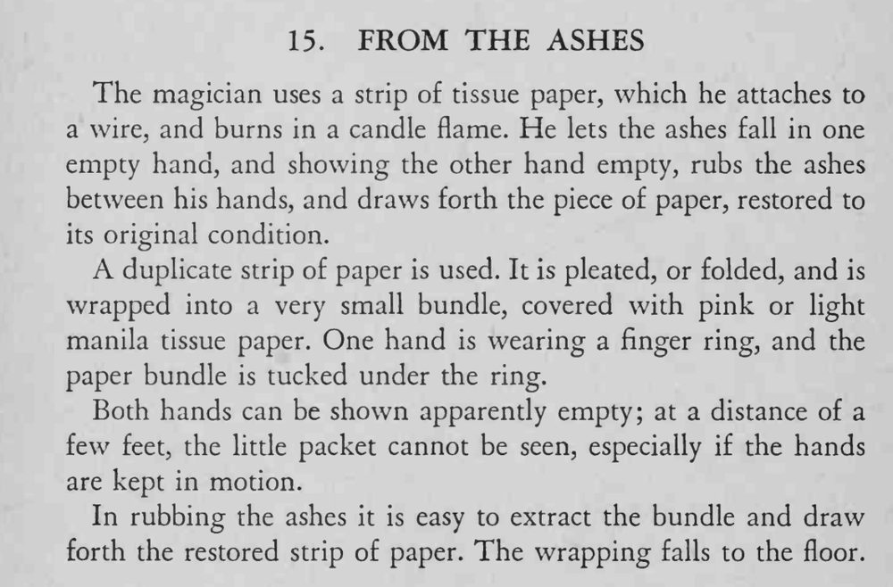

纸条在烛火上烧成灰，魔术师把灰在手中一搓，纸条完好无损地出现。
戒指下的小包要小，双手不停移动才不显眼。

The magician uses a strip of tissue paper, which he attaches to a wire, and burns in a candle flame. He lets the ashes fall in one empty hand, and showing the other hand empty, rubs the ashes between his hands, and draws forth the piece of paper, restored to its original condition. duplicate strip of paper is used. It is pleated, or folded, and is wrapped into a very small bundle, covered with pink or light manila tissue paper. One hand is wearing a finger ring, and the paper bundle is tucked under the ring. Both hands can be shown apparently empty; at a distance of a few feet, the little packet cannot be seen, especially if the hands are kept in motion. In rubbing the ashes it is easy to extract the bundle and draw forth the restored strip of paper. The wrapping falls to the floor.